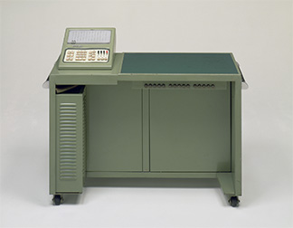
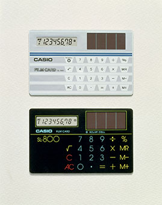
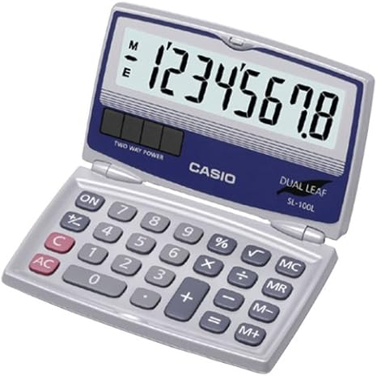
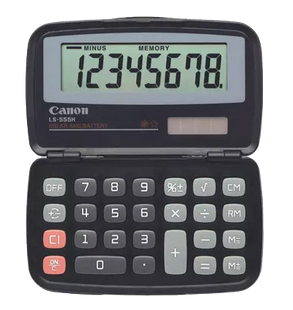

Home: ⌂ Introduction ⌂
Before covering the SL-100L Dual Leaf Pocket Calculator’s history, it is only right to start with the unique history of its creator, CASIO. CASIO has a history of innovation and creativity that seeps into every aspect of its existence, including its corporate philosophy; their mission is simple, “through the power to put wonder at hand, bring new levels of joy to lives one by one…” [1].
The following figures showcase CASIO’s historical contributions to the calculator scene, which include one of the first calculators in CASIO’s SL product line.

Figure 1: 14-A – The World’s First Compact All-Electric Calculator
Released June 1957 [2]
Figure 2: AL-1000 – The World’s First Programmable Electronic Desktop Calculator
Released October 1967 [2]

Figure 3: CASIO Mini – The World’s First Personal Calculator
Released August 1972 [2]

Figure 4: Film Card SL-800 – Credit-Card Size Calculator (0.8mm Thick)
Released November 1983 [2]

Figure 5: FX-7000G – The World’s First Graphing Scientific Calculator
Released August 1985 [2]
The Film Card SL-800 had a sleek and striking design, which gained it purchase to the Museum of Modern Art’s archive [3]. This calculator encompasses the same range of functionality as the SL-100L and originally sold for ¥5,900, or approximately $80.27 in today’s money [4][5][6]. Nearly 30 years after the release of the SL-800, the SL-100L became publicly available.

Figure 6: SL-100L – Pocket Calculator
Released September 2012 [7]
The SL-100L Pocket Calculator is available for direct order from CASIO for $7.41 [8].
Like many other general function calculators, this device may be found at a variety of physical storefronts including supermarkets, office supply stores, and school supply chains. A few online listings have been provided as follows:
The SL-100L is manufactured and sold by CASIO.
As a mass-produced consumer electronic device, there are products similar to the SL-100L in both functionality and design, including knock-offs and off-brand versions, some of which are listed below.

Figure 7: Sharp EL-243SB Pocket Calculator [11]

Figure 8: Canon LS-555H Business Calculator [12]

Figure 9: Maizoon JS-732A Folding Clamshell Calculator [13]
The Maizoon calculator is especially interesting as it is the only off-brand calculator shown in this section; this model of calculator is also listed online as the JOINUS JS-732A/CT-8855V, the Neel CT-8855V, and the CITHZEN CT-8855V. It has a very tactile appearance and claims to be powered by AAA batteries in addition to solar. It also boasts comparison operators (greater than and less than) as part of its specialty functionality.
While some of the other devices may provide unique features, none of them match the sleek form factor or tasteful appearance of CASIO’s SL-100L; the Canon LS-555H comes close, but lacks the refinement required to justify its higher price point.
Prev: ◄— Introduction ◄—
Next: —►Photo Journal —►
https://world.casio.com/corporate/principle/ (accessed Apr. 23, 2025).
https://world.casio.com/corporate/history/ (accessed Apr. 23, 2025).
https://www.moma.org/collection/works/2935?artist_id=1011&page=1&sov_referrer=artist
https://www.casio-calculator.com/Museum/Pages/SSS/SL-800%20(D)/SL-800%20(D).html (accessed Apr. 23, 2025).
https://www.poundsterlinglive.com/bank-of-england-spot/historical-spot-exchange-rates/usd/USD-to-JPY-1983 (accessed Apr. 23, 2025).
https://www.usinflationcalculator.com/ (accessed Apr. 23, 2025).
https://www.amazon.com/Casio-Sl-100l-Solar-Calculator-Folding/dp/B00CSX8FXG (accessed Apr. 23, 2025).
https://www.casio.com/us/basic-calculators/product.SL-100L/ (accessed Apr. 21, 2025).
https://underwooddistributing.com/products/casio-sl-100l-pocket-calculator-foldable (accessed Apr. 24, 2025).
https://www.walmart.com/ip/Casio-SL-100L-8-Digit-Folding-Solar-Calculator-Large-Display/13246943 (accessed Apr. 24, 2025).
https://sharpcalculators.com/products/el243sb (accessed Apr. 24, 2025)
https://www.usa.canon.com/shop/p/ls-555h?color=Black&type=New (accessed Apr. 24, 2025).
https://www.amazon.com/Maizoon-Calculator-12-Digit-Portable-Computing/dp/B0CMTJC24Z?source=ps-sl-shoppingads-lpcontext&ref_=fplfs&psc=1&smid=A1BAUAL7DLTVKK&gQT=1 (accessed Apr. 24, 2025).